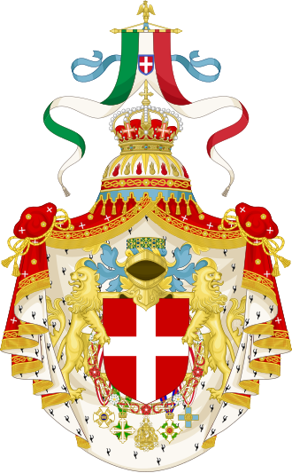

Zvjezdarnica nekada

Mornarička Zvjezdarnica u Puli
(Marinesternwarte)
Austro-ugarska
Mornarička zvjezdarnica u Puli utemeljena je 1869. godine kao jedan
od odjela Carskog i Kraljevskog Hidrografskog zavoda (ureda) Ratne
mornarice (K. und K. Hidrographisches Amt), nakon što je grad 1853.
godine postao glavna austrijska ratna luka. Već 1871. godine je na
jednom od gradskih brežuljaka, Monte Zaru, podignuta namjenska
zgrada za Hidrografski zavod.

Fotografija nove zgrade pulskog Hidrografskog zavoda (Zvjezdarnice) na
Monte Zaru, koju je snimio poznati pulski fotograf Erminio Mioni.
 Začetci Pulske Zvjezdarnice naziru se još 1840. godine u Pomorskoj
zvjezdarnici u Veneciji, koje je djelovala u sklopu austrijske
Vojno-pomorske akademije. Nakon ratnih zbivanja 1848. godine,
Austrija gasi Vojno-pomorsku akademiju u Veneciji i u Trstu 1850.
godine utemeljuje novu Mornaričku akademiju, u čijem se sklopu kao
odjel nalazi i Zvjezdarnica. Utemeljenjem Hidrografskog zavoda u
Puli 1869. god., u pulsku Zvjezdarnicu je preseljen dio inventara
tršćanske Zvjezdarnice. U skladu sa Statutom, pulski Hidrografski
zavod je bio pod vrhovnom nadležnošću Admiraliteta, a imao je četiri
odjela (Zvjezdarnica, Spremište nautičko-fizikalnih instrumenata,
Spremište pomorskih karata i
Mornarička biblioteka). U Mornaričkoj zvjezdarnici su bile ustrojene četiri službe
(Služba točnog vremena, Kronometarska služba, Meteorološka služba,
Geomagnetska služba). Imala je više značajnih i u to doba vrlo
modernih
instrumenata, kojima je vršena intenzivna znanstvena i stručna
djelatnost.
Začetci Pulske Zvjezdarnice naziru se još 1840. godine u Pomorskoj
zvjezdarnici u Veneciji, koje je djelovala u sklopu austrijske
Vojno-pomorske akademije. Nakon ratnih zbivanja 1848. godine,
Austrija gasi Vojno-pomorsku akademiju u Veneciji i u Trstu 1850.
godine utemeljuje novu Mornaričku akademiju, u čijem se sklopu kao
odjel nalazi i Zvjezdarnica. Utemeljenjem Hidrografskog zavoda u
Puli 1869. god., u pulsku Zvjezdarnicu je preseljen dio inventara
tršćanske Zvjezdarnice. U skladu sa Statutom, pulski Hidrografski
zavod je bio pod vrhovnom nadležnošću Admiraliteta, a imao je četiri
odjela (Zvjezdarnica, Spremište nautičko-fizikalnih instrumenata,
Spremište pomorskih karata i
Mornarička biblioteka). U Mornaričkoj zvjezdarnici su bile ustrojene četiri službe
(Služba točnog vremena, Kronometarska služba, Meteorološka služba,
Geomagnetska služba). Imala je više značajnih i u to doba vrlo
modernih
instrumenata, kojima je vršena intenzivna znanstvena i stručna
djelatnost.
Nakon gradnje nove zgrade, podignut je park koji je postao jedan od
najljepših u Puli. Brodovi ratne mornarice su iz svojih znanstvenih
misija po cijelom svijetu donosili raznoliku floru kojom je uređivan
park. Godine 1877. ispred Zavoda je postavljen spomenik viceadmiralu
Wilhelmu von Tegetthoofu, koji je postao slavan kada je 1866. godine
kao zapovjednik austrijske ratne flote porazio talijansku kod Visa.
Pulska Carska i Kraljevska Mornarička zvjezdarnica (K.u.K. Marine
Sternwarte) kao dio Hidrografskog zavoda austrijske Ratne mornarice,
najstarija je astronomska ustanova na području Republike
Hrvatske. To je vrijeme u kojem se promatranje i proučavanje nebeskih
tijela i astronomskih pojava počelo naglo razvijati zahvaljujući
uznapredovaloj tehnici brušenja leća i izradi specijalnih optičkih
stakala, te usavršavanju astronomskih instrumenata. U Europi se
razvojem specijalnih grana tehnike izrađuju kronometri i drugi
mjerni instrumenti, te se grade moderne zvjezdarnice na tradiciji
evropske astronomije (Kobenhaven, 1656; Pariz, 1667; Greenwich,
1676; Berlin, 1706; Petrograd, 1725; Beč, 1755; Venecija, 1840;
Trst, 1850). Upravo zahvaljujući modernoj opremi i novim metodama
rada i promatranja, te izuzetnim zalaganjem austrijskog astronoma
Johanna PALISE, u desetak godina prošlog stoljeća (1871-1880), Mornarička
zvjezdarnica u Puli upisala se u trajnu listu eminentnih
astronomskih svjetskih promatračnica, jer je opsežnom astronomskom
djelatnošću otkriveno i evidentirano čak 28 novih planetoida, od
kojih je jedan dobio naziv "Istra", te po kojemu je ime i dobilo
naše društvo.
Bernhard WALTER
koji je u XV. stoljeću sagradio u Nurnbergu prvu europsku
zvjezdarnicu,
Spiridion GOPČEVIĆ (Leo Brenner)
koji je podigao vlastiti opservatorij "Manora" u Malom Lošinju,
Oton KUČERA
koji je otvorio 1903. godine zagrebački astronomski opservatorij na
Popovom tornju i Niko MILIČEVIĆ
utemeljitelja zvjezdarnice na Braču - značajna su imena za europsku
i hrvatsku astronomiju. Uz njih imena astronoma
Johanna PALISE i
Ive BENKA
uz mnoge druge astronomske djelatnike zaista zaslužuju dužnu
znanstvenu pozornost.

|
Izgled zgrade pulskog Hidrografskog zavoda (Zvjezdarnice) u vrijeme između dva svjetska rata. Zapažaju se znaci neodržavanja i propadanja. |
 |
Sudbina Zvjezdarnice nakon raspada Austro-Ugarske monarhije i
zaposjedanjem Istre po talijanskoj vojnoj sili, podudara se sa općom
stagnacijom grada Pule. Astronomski instrumenti i biblioteka su
preseljeni u Trst i druge talijanske gradove, a pulski Hidrografski
zavod preimenovan je u talijanski Kraljevski Hidrografski institut,
sa statusom podružnice središnje talijanske hidrografske ustanove.
Unutar te podružnice provodila su se meteorološka i geomagnetska
opažanja, dok su astronomska potpuno zamrla.

|
Nakon bombardiranja djelomično je sačuvano ostalo samo sjeveroistočno krilo Zvjezdarnice u vrlo lošem stanju. Ono postoji i danas. |
Nakon kapitulacije Italije, Pulu je početkom listopada 1943.
zaposjela njemačka vojska.1944. godine anglo-američko borbeno zrakoplovstvo je tijekom
bombardiranja Pule razorilo zgradu Zavoda. Djelomično je ostao
sačuvan samo dio sjeveroistočnog krila, u kojemu je nakon obnove
1947/48. godine smještena meteorološka postaja Jugoslavenske ratne
mornarice. Godine 1949. godine ovu postaju preuzima novoutemeljena
Uprava Hidrometeorološke službe pri Vladi NR Hrvatske, današnji
Državni hidrometeorološki zavod Republike Hrvatske. Godine 1973. u
Puli je utemeljeno
Astronomsko društvo "Istra", koje je 1982. godine obnovilo astronomske opservacije u
Zvjezdarnici, te kojemu je uz popularizaciju astronomije jedna od
temeljnih zadaća i briga o pulskoj Zvjezdarnici, kao
kulturno-povijesnom nasljeđu našeg grada.

|
Izgled Zvjezdarnice (prije sanacije). |

|
Od samog povratka astronoma na pulsku Zvjezdarnicu, ulažu se
ogromni napori u njenu obnovu. Nanovo je prekriven krov, zamijenjen
lim na glavnoj kupoli, uređena unutrašnjost, a uz pomoć
brodogradilišta "Uljanik" 1999. godine obnovljen sustav za otvaranje
glavne kupole.
2006. godine uz novčanu potporu gradske uprave, ravni krov od dasaka
i ljepenke iznad učionice, sanitarnog čvora i predavaonice, kojem je
prijetilo urušavanje, zamijenjen je betonskom pločom, na kojoj je da
bi se bolje iskoristilo novonastalu površinu, napravljena terasa za
promatranja i predavanja tijekom klimatološki povoljnijeg dijela
godine.
2007. godine je obnovljen sanitarni čvor uz spajanje na
kanalizaciju, a saniran je i podrum.
2008. godine je započela sanacija terase oko glavne kupole i
pročelja.
2009. godine je u cijelosti obnovljena terasa oko glavne kupole,
dovršena obnova pročelja, gradnja pristupne staze do objekta,
uređenje unutrašnjosti i uređenje okoliša.

|
Izgled Zvjezdarnice (nakon sanacije). |

|
Smještena na jednom od najljepših mjesta Pule, nadomak samoga
gradskog središta, s prekrasnim pogledom koji se s nje pruža prema
pulskom zaljevu i luci, stara pulska Zvjezdarnica je zasluženo i u
većoj mjeri dočekala jednu cjelovitu obnovu kako bi dostojna
znanstvenih otkrića koja su sa nje učinjena, svojim sadržajima i
izgledom, oplemenila povijesni i kulturni sadržaj našeg tri
tisućljetnog grada.